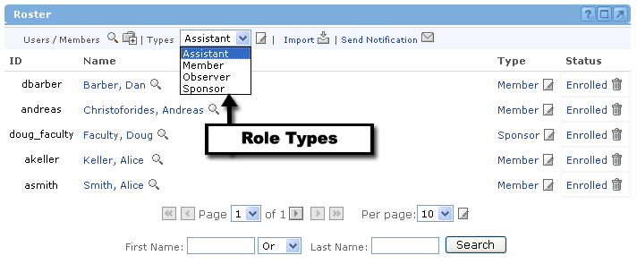

What are Permissions?
When you set or define the permissions for an offering, you are basically setting limits for what each role type can do. Each user is then assigned to a default role, which governs their permissions. However, you can also edit the permissions for each specific user if you don't like the default settings. But first, we will explain how to change the permissions for a specific role type. This is called Editing a Role.
Editing a Role To Edit a Role for the current offering, simply select a role from the drop-down menu at the top of the Roster channel and click the Edit icon. |

You will now see a long list of different functionality or system behaviors specific to each of the Groupware channels. Check the boxes next to features that you would like this role type to be allowed to do. Uncheck the boxes if you would want this role type to be restricted from performing those corresponding features.
Once you have made all the necessary changes, click the "Update" button at the bottom of the channel. Or, click "Cancel" to return to the Roster without making any changes.